Prompt Vault / Meta Tokens / Meta Token Stacks
Meta Token Stacks
26 prompts with preview images. Tap an image to enlarge, “Copy prompt” to grab the text.

A cinematic film still of a 24-year-old female ninja standing on the edge of a skyscraper rooftop overlooking a sprawling futuristic metropolis at night. She wears a fitted all-black tactical suit intricately outlined in glowing blue and purple neon fractal patterns and filament circuitry. Her masked face is partially visible, eyes scanning the horizon. The city lights reflect off her armor. Shot on ARRI Alexa Mini LF, Panavision T-Series Anamorphic lenses, T2.8 aperture, 8k resolution, incredibly detailed, high dynamic range (HDR), cinematic color grading, clean highlights, deep shadows, intricate textures, film grain, epic scope, dramatic atmosphere.
, ,

, , Uncompressed RAW 16-bit ACEScg image, RED V-RAPTOR 8K VistaVision, Sony Venice 2 IMAX certified, soft diffusion with HDR10+ luminance contrast, cinematic depth of field, hyper-detailed textures, RAW color science, natural imperfections

A candid, raw film photograph of a tired firefighter covered in soot, sitting on the rear bumper of a fire truck, drinking water from a bottle. The background is out of focus smoke and debris. Natural light. Cinéma vérité style, handheld camera feel, shot on Super 16mm film, slight chromatic aberration, raw and unfiltered, realistic textures, unpolished, environmental portrait, dramatic grit

A dynamic film still capturing frozen motion of a white rally car drifting sideways through a mud track in a dense forest. Mud flies into the camera lens. The headlights cut through the twilight mist. Shot on RED V-Raptor XL, high shutter speed, kinetic energy, motion blur on extremities, particle effects, aggressive camera angle, intense directional lighting, gritty texture, raw power, suspenseful action.
Leica SL2-S, APO-Summicron-SL 75mm f/2, f/2.8 75mm

Arri Alexa 35, JDC Xtal Xpress, The most realistic photograph ever in the world: f/1.4 14mm
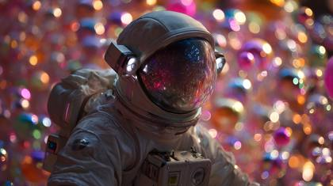
Arri Alexa 35, ARRI Signature Prime, 50mm
ARRI ALEXA 35, ARRI Signature Prime 50mm, T2.8 50mm
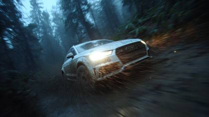
A dynamic film still capturing frozen motion of a white rally car drifting sideways through a mud track in a dense forest. Mud flies into the camera lens. The headlights cut through the twilight mist. Shot on RED V-Raptor XL, high shutter speed, kinetic energy, motion blur on extremities, particle effects, aggressive camera angle, intense directional lighting, gritty texture, raw power, suspenseful action.
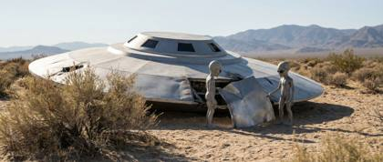
Red Raptor V, Laowa Macro,
Hasselblad H6D-100c, Hasselblad HC 100mm f/2.2, f/2.8 100mm
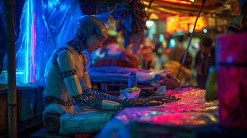
Sony Venice 2 CineAlta, Zeiss Supreme Prime Radiance lenses,
Canon EOS R5, Phase One IQ4, f/1.2 110mm
Sony Venice, Lensbaby, framegrab_uhd.mov + crystal sharp + zero motion blur
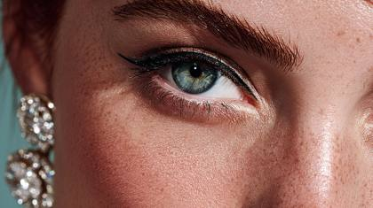
An extreme ultra-photorealistic macro beauty portrait of the model’s face. The focus is incredibly sharp on her eyes and flawless skin texture, showing individual pores and vellus fine hairs. She is wearing avant-garde graphic eyeliner and high jewelry diamond earrings that sparkle under studio lights. Lighting: Professional beauty dish studio lighting, clean and flattering. Tech: Phase One IQ4 150MP Camera, 120mm Macro lens. Meta: Retouching-level detail, incredibly sharp, stunning eyes, luxury makeup campaign.
Phase One XF IQ4 150MP, Schneider Kreuznach 80mm LS f/2.8, f/4 80mm
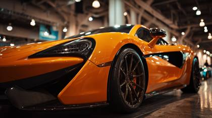
Leica M10-R, Noctilux-M, f/.95 50mm

Sony A7R, Zeiss Ultra Prime, A cinematic closeup portrait, hyperreal depth f/1.8 35mm
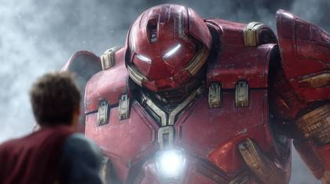
Red Raptor V, Petzval, IMAX + Netflix + Marvel + RAW + Leaked
RED V-RAPTOR XL 8K, Zeiss Supreme Prime 85mm, T2.8 85mm
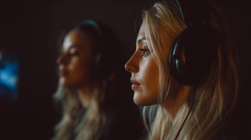
Arri Alexa 35, Hawk V-Lite, f/5.6 14mm
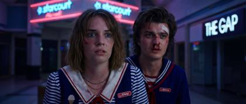
Arri Alexa 35, ARRI Signature Prime, 50mm

close-up, natural soft diffusion: Realistic image of a Modern Soldier in action during winter mountain raid in the mountains ,front view, waist portrait, shot on ARRIFLEX 16SR, Leica Summilux, T2.8 aperture
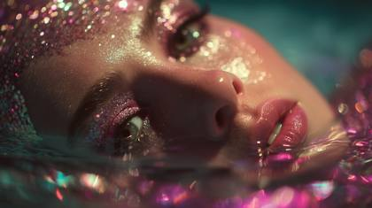
A dreamlike, highly stylized shot of a fashion model with glittery, avant-garde makeup. She is submerged in a pool of water that glows with purple and teal bioluminescence. Ripples distort her reflection. Stylized cinematography, shot on ARRI Alexa 65, vintage high-speed optics, f/0.95 aperture, dreamlike atmosphere, dramatic LED lighting gels, bioluminescence, highly stylized color palette, ethereal bokeh, hypnotic.
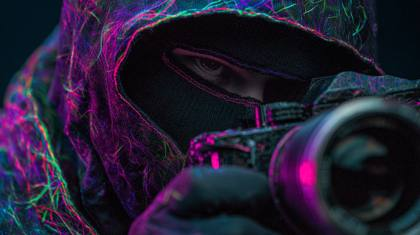
IMAX Film Camera, Panavision C-Series, hyperrealism.elite_magazine 20mm
Want the generators that make these?
This is the free library. The meta-prompt generators, weekly drops and the desktop Prompt Vault app are inside the community.
Join AI Injection →